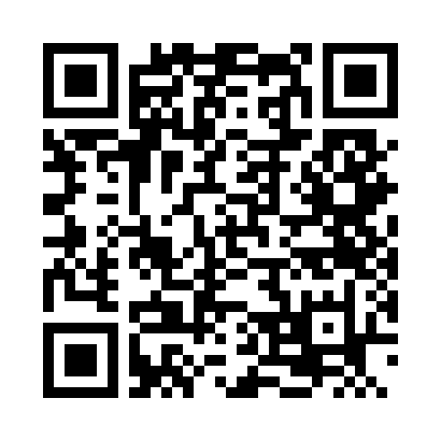

가까운 일상, 편리한 주차
주차할 곳,
미리 확인하세요.
부산시설공단 공영주차장의 빈자리부터 위치 확인까지.
제공기관 갱신 기준실제 빈자리는 현장에서 달라질 수 있어요.
조회 주차장—곳
빈자리 있는 곳—곳
만차—곳
빈자리 확인 불가—곳
주차장 목록
인터넷 연결 후 주차 정보를 조회합니다.
주차장 정보를 불러오는 중입니다.
데이터 출처와 이용 안내
실시간 현황: 부산시설공단 · 기본정보: 부산광역시
빈자리는 제공기관 갱신 시점의 정보입니다. 요금·운영시간은 기준일을 확인하고 현장 안내를 우선해 주세요. 주소는 공공데이터 기준이며 실제 위치와 다를 수 있습니다. 카카오맵에서 위치를 확인하세요.
휴대폰에서도 편하게, 부산주차장
휴대폰 카메라로 QR코드를 찍어 사이트를 열어보세요.
① QR 스캔 → ② 설치 안내 → ③ 설치 확인
설치 방법 보기
Android: Chrome에서 사이트를 연 뒤 ‘앱처럼 설치하기’ 또는 메뉴 → 앱 설치 / 홈 화면에 추가.
iPhone: Safari 공유 메뉴 → 홈 화면에 추가.
PC: 브라우저의 설치 버튼이나 메뉴를 이용하세요.
카카오톡 등 앱 안에서 열었다면 Chrome이나 Safari로 다시 접속하세요.
